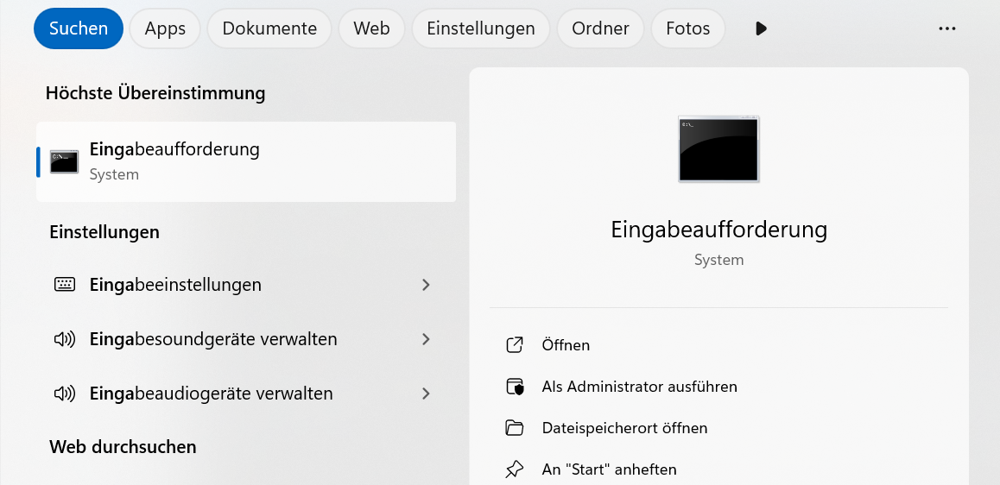
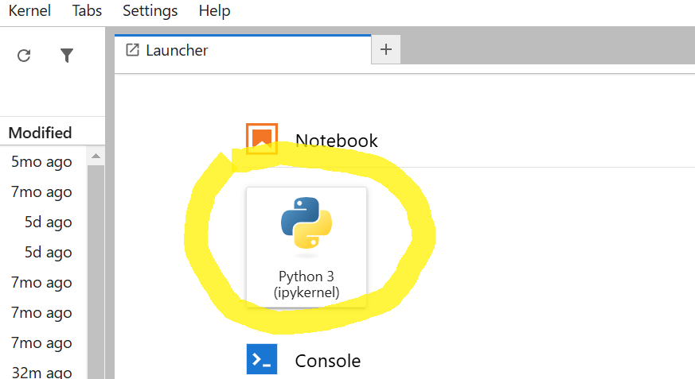

Notwendige Software und Kenntnisse
Lernziele
Installation und Einrichten der notwendigen Software auf einem Windows-System
Starten des Jupyter Notebooks zur Vorbereitung auf die Kurs-Elemente
Jupyter Notebooks sind eine leistungsstarke Umgebung für interaktive Programmierung, Datenanalyse und Visualisierung. Um Jupyter Notebooks auf einem Windows-PC nutzen zu können, benötigen Sie eine entsprechende Software-Infrastruktur. Die folgenden Schritte zeigen Ihnen, wie Sie Ihren Rechner dafür vorbereiten und welche frei verfügbaren Ressourcen Sie nutzen können, um sich vor dem Start der Kurse schon Grundkenntnisse anzueignen.
Einrichtung der Infrastruktur für Jupyter Notebooks auf einem Windows-PC
Während der Vorbereitung der Kurseinheiten arbeiten wir an einigen Stellen mit der Windows-Eingabeaufforderung (CMD). Die Eingabeaufforderung ist eine Kommandozeilenumgebung, mit der Sie direkt mit Ihrem Betriebssystem interagieren können, indem Sie Textbefehle eingeben. Sie ermöglicht Ihnen, Programme zu starten, Dateien zu verwalten und Systemprozesse zu steuern. CMD ist besonders nützlich für Entwickler, um Installationen auszuführen oder Werkzeuge wie Python und Jupyter zu konfigurieren.
Sie können die Eingabeaufforderung öffnen, indem Sie die Windows-Taste drücken (oder in der Suchzeile direkt), „cmd“ eingeben und Enter drücken (siehe Abbildung).
Eine vollständige Referenz der Befehle und Syntax finden Sie in der Microsoft-Dokumentation oder durch Eingabe von help in der Eingabeaufforderung.
Installation von Python oder Anaconda
Jupyter Notebooks basieren auf Python, daher benötigen Sie zunächst eine Python-Installation.
1. Python und Pip:
Laden Sie die neueste Version von Python von der offiziellen Python-Website herunter und installieren Sie diese. Stellen Sie sicher, dass während der Installation die Option „Add Python to PATH“ aktiviert ist.
Falls Python nicht automatisch zum PATH hinzugefügt wurde, können Sie dies manuell konfigurieren. Der PATH ist eine Umgebungsvariable, die das Betriebssystem informiert, wo es ausführbare Dateien wie Python finden kann. Um Python hinzuzufügen, gehen Sie wie folgt vor:
Öffnen Sie das Startmenü, suchen Sie nach Umgebungsvariablen bearbeiten und öffnen Sie die entsprechende Einstellung.
Klicken Sie im unteren Bereich des Fensters auf Umgebungsvariablen.
Im Abschnitt Systemvariablen oder Benutzervariablen suchen Sie nach der Variable Path und klicken auf Bearbeiten.
- Fügen Sie einen neuen Eintrag hinzu, der auf das Installationsverzeichnis von Python verweist, z. B.:
C:\Python39\ (für Python 3.9)
Zusätzlich: C:\Python39\Scripts\, da sich hier Tools wie pip befinden.
Bestätigen Sie die Änderungen und starten Sie die Eingabeaufforderung neu, damit die Änderungen wirksam werden.
Nach diesem Schritt sollte Python über die Eingabeaufforderung mit dem Befehl python oder python3 ausführbar sein. Testen Sie dies, indem Sie python –version eingeben, um die installierte Python-Version zu überprüfen.
2. Jupyter Notebook installieren
Um auf Ihrem lokalen Computer mit Jupyter Notebooks arbeiten zu können, müssen Sie die dafür notwendigen Komponenten installieren. Die folgende Anleitung basiert darauf, dass Sie bereits Python und pip installiert haben. Öffnen Sie die Eingabeaufforderung (CMD) und führen Sie nacheinander folgende Befehle aus:
pip install jupyterlab
pip install notebook
Die Installation der beiden Komponenten sollte weniger als 5 Minuten dauern.
Sie müssen während der Installation keine weiteren Eingaben machen.
3. Jupyter Notebook starten
Sobald die Installation abgeschlossen ist, starten Sie Ihr JupyterLab mit folgendem Befehl in der Eingabeaufforderung:
jupyter lab
Es sollte sich ein Browserfenster öffnen, in dem Sie auf der linken Seite die Ordnerstruktur Ihres Computers auf der ersten Ebene widergespiegelt sehen (z. B. „Downloads“, „Dokumente“ usw.). Navigieren Sie zu dem Ordner, in dem Sie Ihr erstes Notebook starten möchten.
Falls der Launcher-Tab nicht automatisch geöffnet wird, klicken Sie auf das „+“-Zeichen oben links in der Ecke:

Öffnen Sie nun ein neues Notebook:
In den folgenden Kurs-Elementen werden wir nur mit Python3 arbeiten, daher ist die Kernel-Auswahl noch nicht relevant. Sie können alle Kurs-Elemente auf dem Python3 Kernel durchführen. Falls Sie später mit verschiedenen Programmiersprachen und Python-Umgebungen arbeiten möchten, sollten Sie sich bezüglich der verschiedenen Möglichkeiten weiter informieren.
Nun haben Sie Ihr erstes Notebook erstellt und sind startklar. Geben Sie Ihrem Notebook einen Namen – per Default wird ein neues Notebook mit dem Namen „Untitled“ angelegt. In der Übersicht links können Sie dies mit „Rechtsklick > Umbenennen“ auf Ihr Notebook ändern.
Notwendige Kenntnisse
Innerhalb der CoKLIMAx-II-Ressourcen vermitteln wir keine tiefergehenden Python-Kenntnisse. Die Notebooks und Lernressourcen, die wir entwickelt haben und zur Verfügung stellen, können Sie ohne Vorkenntnisse bedienen. Falls Sie Interesse daran haben, Ihre Python-Kenntnisse zu verbessern, empfehlen wir die Nutzung von frei verfügbaren Ressourcen, wie sie zum Beispiel auf YouTube.com zur Verfügung stehen. Bei Fragen und Problemen während der Erstellung eigener Jupyter Notebooks greifen Sie am besten auf die Plattform Stack Overflow zurück. Es gibt kaum eine Frage, die nicht schon einmal gestellt wurde.